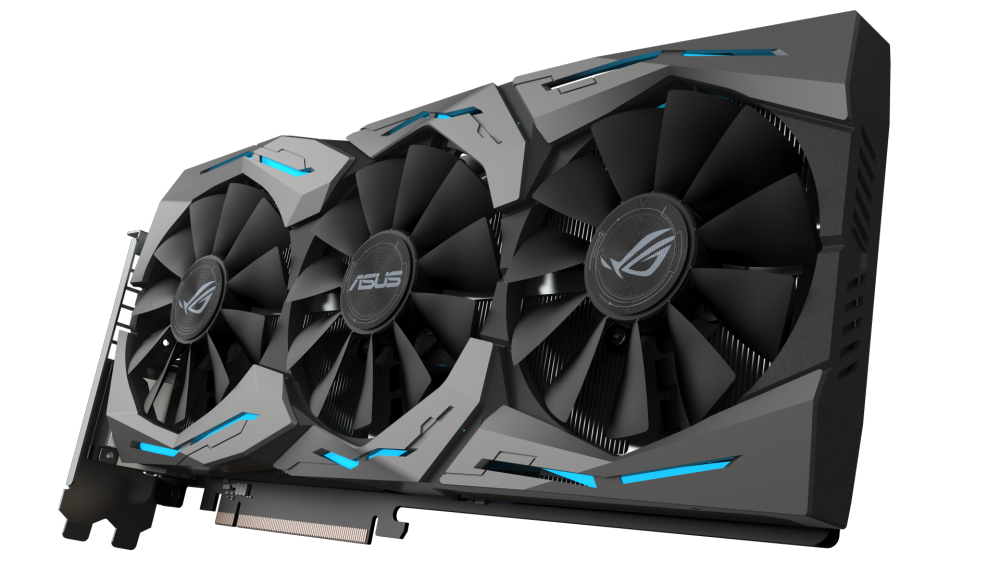
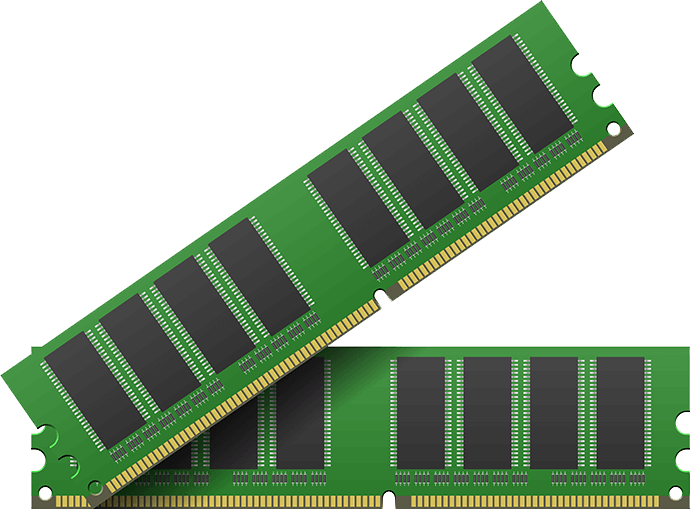
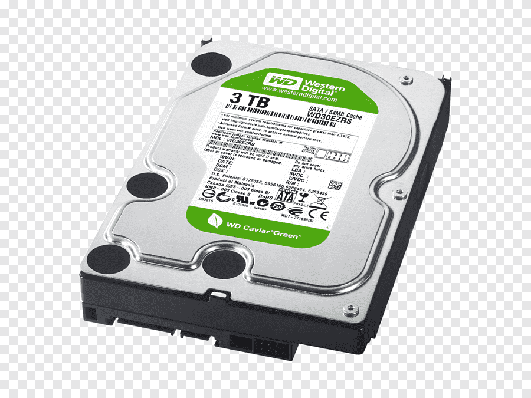
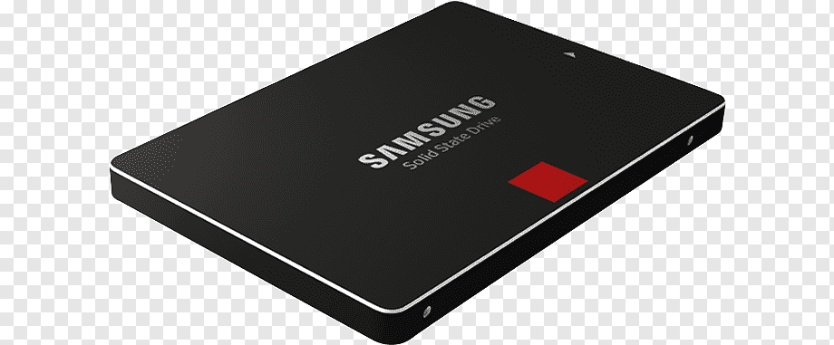

MOTHERBOARD:
El mother o placa madre es la columna vertebral que une los componentes de la computadora en un mismo punto y les permite comunicarse entre sí. Sin ella, ninguna de las piezas de la computadora, como el CPU, la GPU o el disco duro, podrían interactuar.

PLACA DE VIDEO:
Una tarjeta gráfica o tarjeta de video es una tarjeta de expansión de la placa base de la computadora que se encarga de procesar los datos provenientes del procesador y transformarlos en información comprensible y representable en el dispositivo de salida.
PROCESADOR
La unidad central de procesamiento o procesador es un componente del hardware dentro de un ordenador, teléfonos inteligentes, y otros dispositivos programables. Su función es interpretar las instrucciones de un programa informático mediante la realización de las operaciones básicas aritméticas, lógicas, y externas.

RAM
La memoria RAM (Random access memory) es una memoria de almacenaje a corto plazo. El sistema operativo de ordenadores u otros dispositivos utiliza la memoria RAM para guardar de forma temporal todos los programas y sus procesos de ejecución.
FUENTE DE ALIMENTACION
La fuente de alimentación es el dispositivo que se utiliza para convertir la corriente de la red eléctrica en una forma de energía adecuada para los componentes de un dispositivo o sistema electrónico.

ALMACENAMIENTO
HDD
El disco rigido, también conocido como HDD, es una unidad de almacenamiento que guarda de forma permanente tus datos en la computadora. Esto quiere decir que los archivos no se eliminan cuando se apaga la unidad como suele pasar con los datos que se guardan temporalmente en la memoria RAM.
SDD
Conocida como unidad de estado sólido o disco de estado sólido, una SSD (por la abreviación en inglés de Solid State Drive) es una opción de almacenamiento de datos que funciona sin partes móviles.
